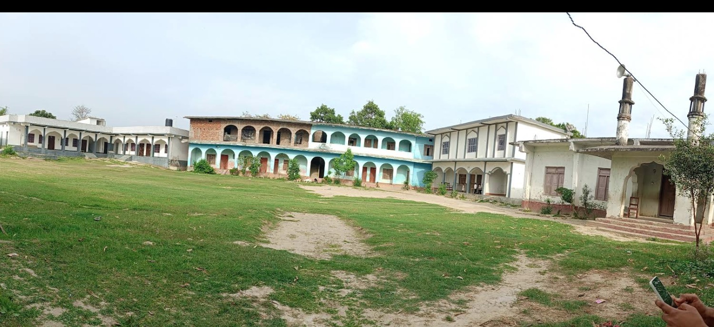
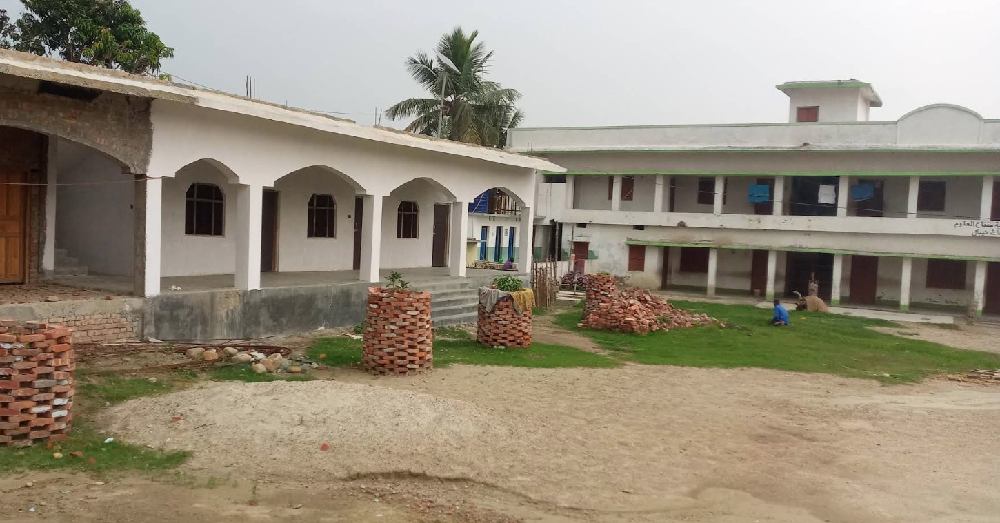
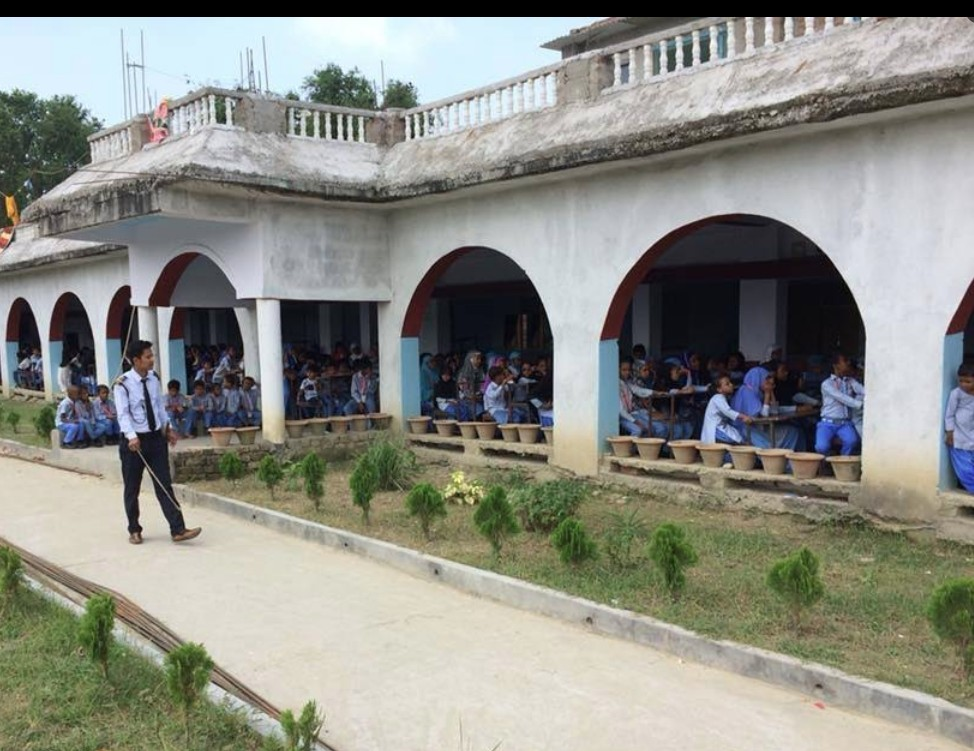
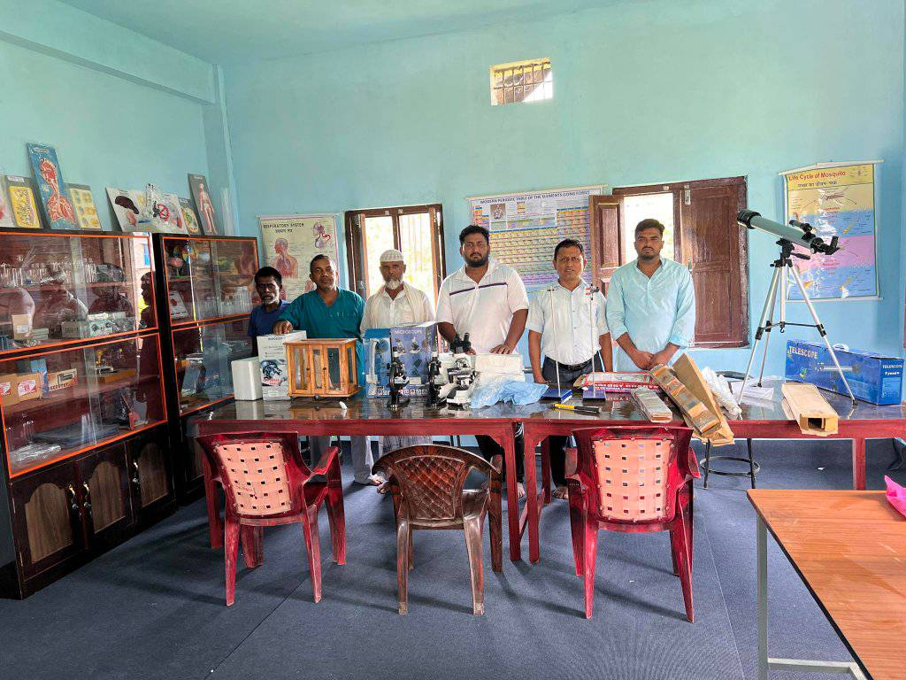
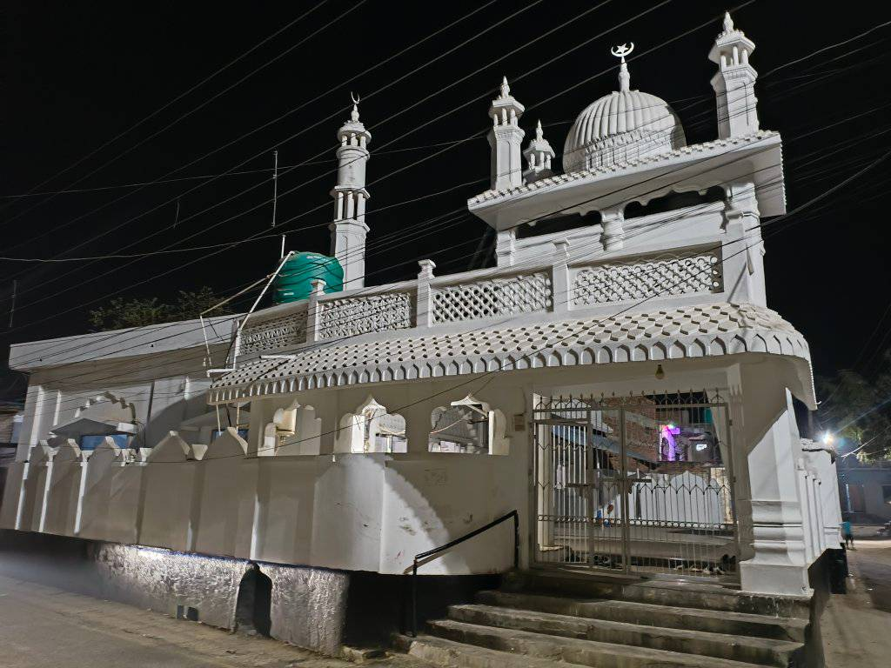
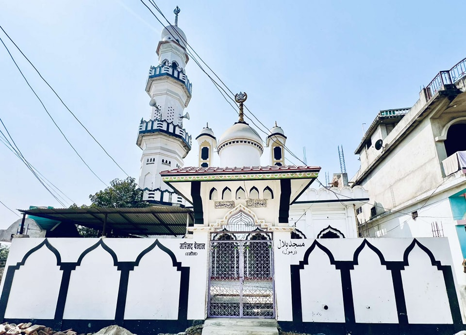
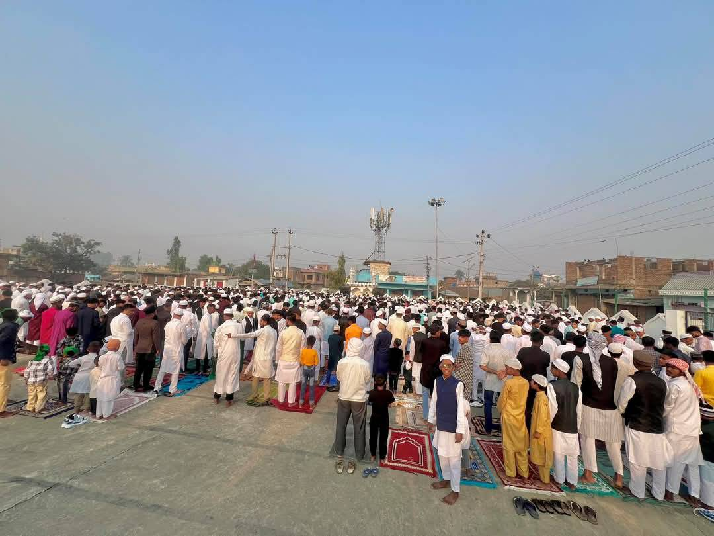

Introduction
Ramaul is a lively village in Siraha Municipality, located in the Madhesh Province of southeastern Nepal. Known for its cultural richness and community spirit, Ramaul is more of a town than a village, with easy access to goods from both the border and Siraha Bazaar.
Home
Geographically, Ramaul lies at 26.80°N 86.09°E and is surrounded by Makhanaha, Basbitta, Manpur, Madar, and the Kamala River. The population ranges between 20,000–25,000, predominantly Muslim, with a unique dialect called Mithila Urdu spoken locally.
The village is divided into five areas: Purab Tola, Uttar Tola, Paschim Tola, Dakshin Tola, and Mansoori Tola. Ramaul Chowk is the central hub, home to the popular Ahmadiya Tea Shop and Eidgah grounds for community prayers.
History
Previously part of the Village Development Committee, Ramaul now falls under Siraha Municipality Wards 3, 4, and 5. It has a rich tradition of Islamic education with six madrasahs, ten mosques, and both government and private schools. The Kamala River flowing nearby adds to its scenic and strategic significance.
Gallery







